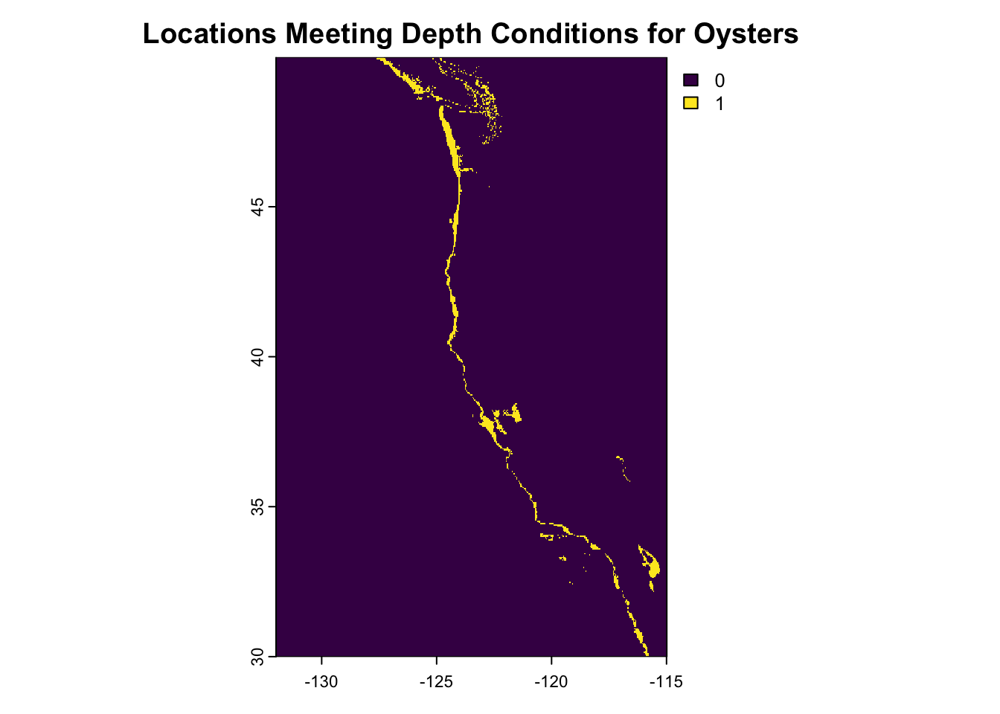

Code
library(tidyverse)
library(sf)
library(terra)
library(here)
library(tmap)
library(ggspatial)library(tidyverse)
library(sf)
library(terra)
library(here)
library(tmap)
library(ggspatial)# Import data
sst_2008 <- terra::rast(here('data', 'average_annual_sst_2008.tif'))
sst_2009 <- terra::rast(here('data', 'average_annual_sst_2009.tif'))
sst_2010 <- terra::rast(here('data', 'average_annual_sst_2010.tif'))
sst_2011 <- terra::rast(here('data', 'average_annual_sst_2011.tif'))
bathymetry <- terra::rast(here('data', 'depth.tif'))
west_coast <- st_read(here('data', 'wc_regions_clean.shp'))# Check to make sure CRS matches before changing into stack
crs(sst_2008) == crs(sst_2009)[1] TRUEcrs(sst_2009) == crs(sst_2010)[1] TRUEcrs(sst_2010) == crs(sst_2011)[1] TRUE# Create a stack of SST rasters
combined_sst <- c(sst_2008, sst_2009, sst_2010, sst_2011)
# Find the mean of each
mean_sst <- mean(combined_sst)
# Convert from kelvins to celsius
mean_sst_celsius <- mean_sst - 273.15
# Crop depth to the extent of the average sst
# bathymetry <- mask(crop(bathymetry, mean_sst_celsius), mean_sst_celsius)
# Resample the bathymetry resolution to the mean_sst_celsius
bathymetry_resampled <- resample(bathymetry, mean_sst_celsius, method = 'ngb')if (ext(bathymetry_resampled) == ext(mean_sst_celsius)) {
print("The extents are the same.")
} else {
warning("The extents are different.")
}[1] "The extents are the same."# Check if the resolutions match
if (all(res(bathymetry_resampled) == res(mean_sst_celsius))) {
print('Great job! Resolutions match.')
}else{
warning('Resolutions do not match.')
}[1] "Great job! Resolutions match."# Check that the CRS match
if(crs(bathymetry_resampled) == crs(mean_sst_celsius)) {
print('Coordinate reference systems match.')
} else{
warning('CRS does not match. Now projecting the resampled bathymetry raster to the mean_sst_celsius CRS.')
bathymetry_resampled <- project(bathymetry_resampled, crs(mean_sst_celsius), method = "bilinear")
print('CRS now match.')
}[1] "CRS now match."# Exploratory plots
#plot(bathymetry_resampled)
#plot(mean_sst_celsius)
# Stack both rasters after ensuring they have the same extent, resolution, and CRS
stacked_bathymetry_sst <- c(bathymetry_resampled, mean_sst_celsius)
plot(stacked_bathymetry_sst)# SST conditions for oysters
sst_rcl <- matrix(c(-Inf, 11, 0,
11, 30, 1,
30, Inf, 0),
ncol = 3, byrow = TRUE)
# Depth conditions for oysters
depth_rcl <- matrix(c(-Inf, 0, 0,
0, 70, 1,
70, Inf, 0),
ncol = 3, byrow = TRUE)
# reclassify
reclassify_sst <- classify(stacked_bathymetry_sst[[2]], rcl = sst_rcl, include.lowest = TRUE)
plot(reclassify_sst, main = 'Locations Meeting SST Conditions for Oysters')#values(reclassify_sst) <- as.factor(values(reclassify_sst))
reclassify_depth <- classify(stacked_bathymetry_sst[[1]], rcl = depth_rcl, include.lowest = TRUE)
#values(reclassify_depth) <- as.factor(values(reclassify_depth))
plot(reclassify_depth, main = 'Locations Meeting Depth Conditions for Oysters')
# Raster map algebra for 0s and 1s
sst_depth_reclass_total <- reclassify_sst * reclassify_depth
# View mask
plot(sst_depth_reclass_total, main = 'Locations Meeting Both Conditions for Oysters')# Compute how many 1s showed up after meeting both conditions
#freq(sst_depth_reclass_total )# Conditional check to transform or check CRS
if (crs(west_coast) == crs(sst_depth_reclass_total)){
print('Coordinate reference systems match!')
}else{
warning('Coordinate reference systems do not match. Transforming now.')
west_coast <- st_transform(west_coast, crs = crs(sst_depth_reclass_total))
print('West Coast Coordinate Reference System now matches the Oyster raster stack.')
}[1] "West Coast Coordinate Reference System now matches the Oyster raster stack."# Compute the are covered by individual raster cells
optimal_locs_mask <- cellSize(x = sst_depth_reclass_total, # area of cells
mask = TRUE,
unit = 'km',
transform = TRUE)
# Plot to view the mask
plot(optimal_locs_mask, main = 'Area Covered by Masked Reclassified Raster Cells')# Rasterize the west coast df with the mask of suitable locations that meet conditions from reclassification
eez_raster <- rasterize(x = west_coast,
y = optimal_locs_mask,
field = 'rgn')
# plot(eez_raster)# Area in each region
eez_zones <- zonal(x = optimal_locs_mask,
z = eez_raster,
fun = "sum",
na.rm = TRUE)
# Join area calcs with the eez_zone dataset
eez_suitability_area <- left_join(west_coast, eez_zones, by = 'rgn')
# GGspatial plot
ggplot() +
geom_sf(data = eez_suitability_area, aes(fill = area)) +
scale_fill_distiller(palette = "Blues",
direction = 1) +
coord_sf() +
theme_minimal() +
labs(title ='Total Suitable Area for Oyster Aquaculture \n Off the West Coast',
x = 'Longitude',
y= 'Latitude',
fill = bquote("Suitable Area (km"^{2}~")" )) +
annotation_north_arrow(location = "tr",
which_north = "true",
height = unit(0.8, "cm"),
width = unit(0.6, "cm")) +
annotation_scale(location = 'bl',
style = 'bar',
width_hint = .35) +
scale_x_continuous(breaks = seq(-180, 180, by = 5))